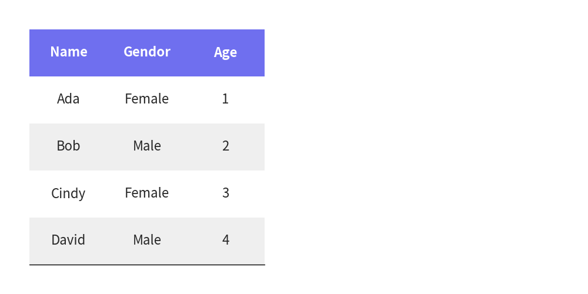

=============
Table
Class Table is used for drawing table.
from drawlib.canvas import config, save
from drawlib.smartarts import Table
config(width=100, height=50, grid=True)
t1 = Table()
t1.draw(
xy=(5, 45),
width=40,
height=40,
data=[
["Name", "Gendor", "Age"],
["Ada", "Female", "1"],
["Bob", "Male", "2"],
["Cindy", "Female", "3"],
["David", "Male", "4"],
],
)
save()

image1.png
You can draw pyramid with these procedure.
- Initialize instance
- Apply table styles
- Draw table with providing coordinate, size and matrix table data
API Specification
Table()
Initialize instance. No args.
clear_styles()
Clear all styles. No args.
set_predefined_style()
Apply predefined styles.
Args:
- name (Literal["default", "monochrome", "white"]): The name of the predefined style.
set_style_cell_headers()
Sets the style for both column and row headers.
Args:
- background_color (Union[Tuple[int, int, int], Tuple[int, int, int, float]]): The background color of the headers.
- textstyle (Union[str, Style]): The text style of the headers. Can be a string key for predefined styles or a Style object.
set_style_cell_header()
Sets the style for the column header.
Args:
- background_color (Union[Tuple[int, int, int], Tuple[int, int, int, float]]): The background color of the column header.
- textstyle (Union[str, Style]): The text style of the column header. Can be a string key for predefined styles or a Style object.
set_style_cell_rowheader()
Sets the style for the row header.
Args:
- background_color (Union[Tuple[int, int, int], Tuple[int, int, int, float]]): The background color of the row header.
- textstyle (Union[str, Style]): The text style of the row header. Can be a string key for predefined styles or a Style object.
set_style_cell_evenodd()
Sets alternating styles for even and odd rows.
Args:
- even_color (Union[Tuple[int, int, int], Tuple[int, int, int, float]]): The background color for even rows.
- even_textstyle (Union[str, Style]): The text style for even rows. Can be a string key for predefined styles or a Style object.
- odd_color (Union[Tuple[int, int, int], Tuple[int, int, int, float]]): The background color for odd rows.
- odd_textstyle (Union[str, Style]): The text style for odd rows. Can be a string key for predefined styles or a Style object.
set_style_cell()
Sets the style for specific cells.
Args:
- background_color (Union[Tuple[int, int, int], Tuple[int, int, int, float]]): The background color of the cells.
- textstyle (Union[str, Style]): The text style of the cells. Can be a string key for predefined styles or a Style object.
- rows (Optional[List[int]]): A list of row indices to apply the style to. If None, applies to all rows.
- columns (Optional[List[int]]): A list of column indices to apply the style to. If None, applies to all columns.
set_style_border()
Sets the style for table borders.
Args:
- top (Union[str, Style, None]): Style for the top border. Can be a string key for predefined styles or a Style object.
- top2 (Union[str, Style, None]): Style for the secondary top border. Can be a string key for predefined styles or a Style object.
- bottom (Union[str, Style, None]): Style for the bottom border. Can be a string key for predefined styles or a Style object.
- left (Union[str, Style, None]): Style for the left border. Can be a string key for predefined styles or a Style object.
- left2 (Union[str, Style, None]): Style for the secondary left border. Can be a string key for predefined styles or a Style object.
- right (Union[str, Style, None]): Style for the right border. Can be a string key for predefined styles or a Style object.
- between_columns (Union[str, Style, None]): Style for borders between columns. Can be a string key for predefined styles or a Style object.
- between_rows (Union[str, Style, None]): Style for borders between rows. Can be a string key for predefined styles or a Style object.
draw()
Draws the table with equal-sized cells.
Args:
- xy (Tuple[float, float]): The coordinates where the table should be drawn.
- width (float): The total width of the table.
- height (float): The total height of the table.
- data (List[List[Any]]): The data to be displayed in the table.
draw_flexible()
Draws the table with flexible cell sizes.
Args:
- xy (Tuple[float, float]): The coordinates where the table should be drawn.
- column_widths (List[float]): A list of widths for each column.
- row_heights (List[float]): A list of heights for each row.
- data (List[List[Any]]): The data to be displayed in the table.
© 2026 drawlib by Yuichi Ito. Released under the Apache 2.0 License.